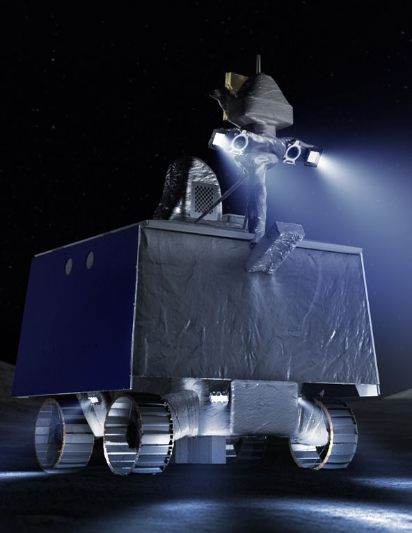

- Why
- How
- Latest
With Artemis missions, NASA will land the first woman and first person of color on the Moon, using innovative technologies to explore more of the lunar surface than ever before. We will collaborate with commercial and international partners and establish the first long-term presence on the Moon. Then, we will use what we learn on and around the Moon to take the next giant leap: sending the first astronauts to Mars.
WHY WE ARE GOING TO THE MOON
We’re going back to the Moon for scientific discovery, economic benefits, and inspiration for a new generation of explorers: the Artemis Generation. While maintaining American leadership in exploration, we will build a global alliance and explore deep space for the benefit of all.

DISCOVERY
With Artemis, we’re building on more than 50 years of exploration experience to reignite America’s passion for discovery.
ECONOMIC OPPORTUNITY
Artemis missions enable a growing lunar economy by fueling new industries, supporting job growth, and furthering the demand for a skilled workforce.

INSPIRATION FOR A NEW GENERATION
We will explore more of the Moon than ever before with our commercial and international partners. Along the way, we will engage and inspire new audiences – we are the Artemis Generation.
OUR SUCCESS WILL CHANGE THE WORLD
HOW WE ARE GOING TO THE MOON
We will build an Artemis Base Camp on the surface and the Gateway in lunar orbit. These elements will allow our robots and astronauts to explore more and conduct more science than ever before.

Orain Spacecraft
The NASA spacecraft that will carry astronauts from Earth to lunar orbit and back.

Space Launch System
Rocket
The only rocket that can send Orion, astronauts, and cargo to the Moon on a single mission. Upon launch, the SLS will be the most powerful rocket in the world.

Exploration Ground
Systems
The structures on the ground necessary to support launch and recovery of returning astronauts.

Gateway
The spaceship in lunar orbit where astronauts will transfer between Orion and the lander on regular Artemis missions. Gateway will remain in orbit for more than a decade, providing a place to live and work, and supporting long-term science and human exploration on and around the Moon.

Human
Landing System
Built by American companies, human landing systems are the final mode of transportation that will take astronauts from lunar orbit to the surface and back to orbit.

Artemis
Base Camp
To give astronauts a place to live and work on the moon, the Artemis Base Camp concept includes a modern lunar cabin, a rover, and a mobile home.
All that we build, all that we study, all that we do,
prepares us to go.
MISSION PATCHES


Artemis I will be an uncrewed flight test of the Space Launch System and the Orion spacecraft around the Moon.


Artemis I will be an uncrewed flight test of the Space Launch System and the Orion spacecraft around the Moon.

Artemis I will be an uncrewed flight test of the Space Launch System and the Orion spacecraft around the Moon.
OUR SUCCESS WILL CHANGE THE WORLD
.png)
National Aeronautics and Space Administration
NASA Official: Brian Dunbar